اردیبهشت و خرداد یکی از بهترین ماهها برای سفر و طبیعت گردی هست و اگر این ماهها رو از دست بدید وارد فصل گرما و خشکی طبیعت شده و لذت و آرامش کافی رو شاید به شما منتقل نکنه. من و دوستانم قدر این فرصت رو دونسته و برنامه یک سفر کوتاه به دل جنگل رو چیدیم و جای شما خالی سفری بسیار زیبا و به یادماندنی از آب در آمد. مقصد روستا و آبشار ولیلا بود که این روستا جزو توابع شهر زیراب سوادکوه محسوب میشه و راهی حدودا ۲۲ کیلومتری رو باید از زیراب به این روستای زیبا طی کنین. برای این که بهتر متوجه بشین به تصویر ماهواره ای که از گوگل گرفتم توجه کنین:
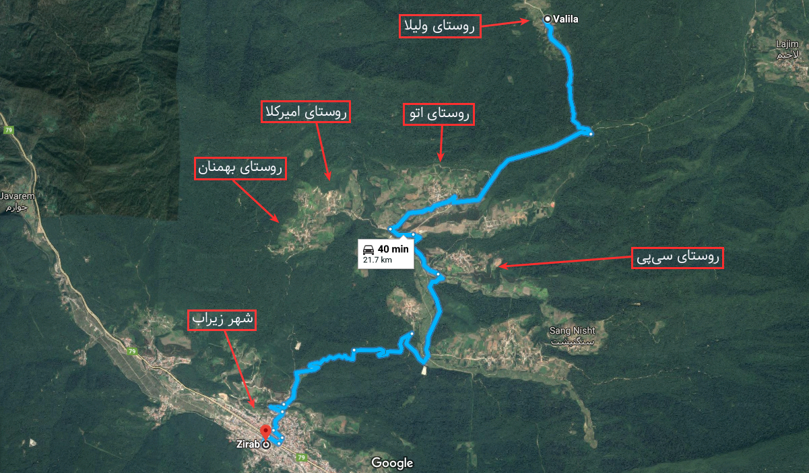
همونطور که در عکس مشخصه شما یک سفر فوقالعاده در میان چندین روستای بسیار زیبا رو تجربه خواهید کرد تا به مقصد برسید. این روستا در میان دو روستای بسیار زیبا و نام آشنای لاجیم و اتو قرار میگیره و دقیقتر این که ولیلا قبل از لاجیم و بعد از اتو قرار داره.
خب حالا بعد طی کردن مسیر ۲۲ کیلومتری از زیراب، نوبت به من میرسه که دست به دوربین شده و لحظات و چشماندازهای زیبای منطقه رو ثبت کنم تا هر وقت خواستیم خاطرات خوش اونجا رو به یاد بیاریم و بقیه دوستان رو هم در دیدن این مناظر زیبا سهیم کنیم. با این حال هیچی خود سفر کردن نمیشه … حتما برید و هوای تازه و طبیعت رو حس کنین: 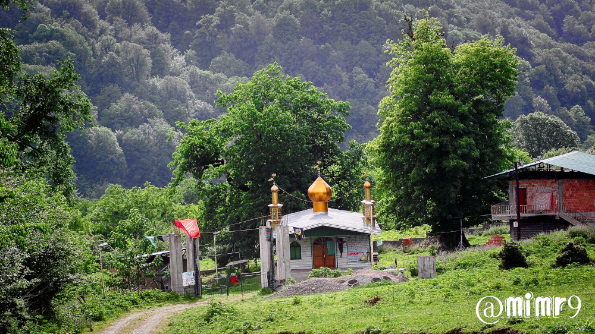 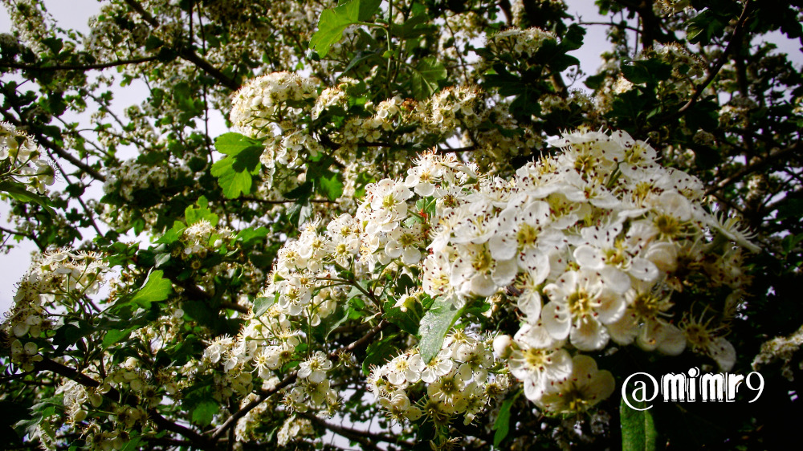 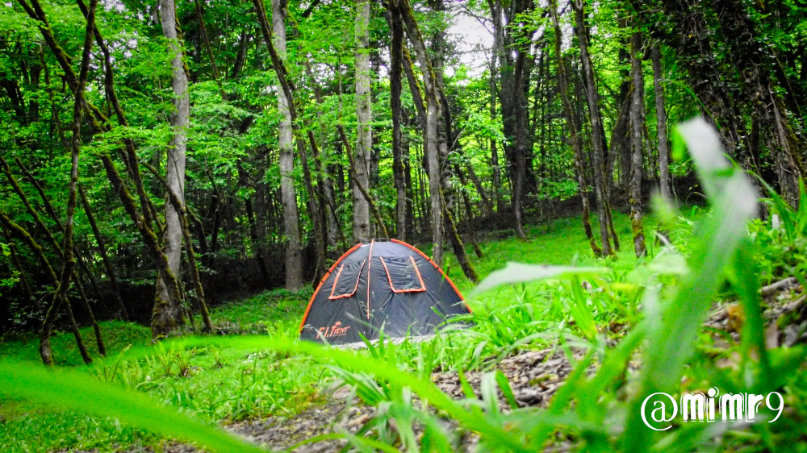 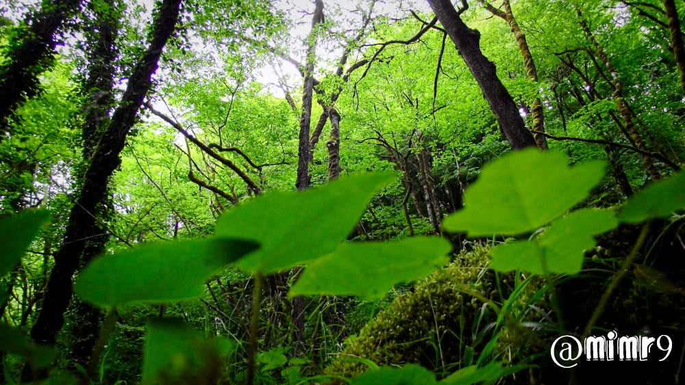 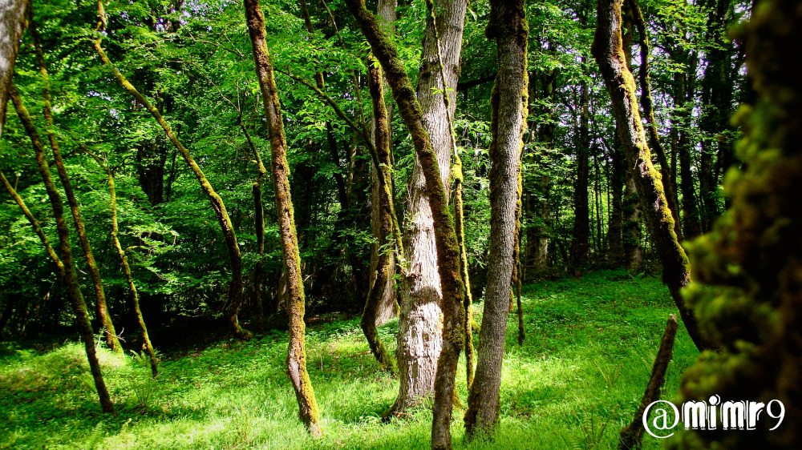 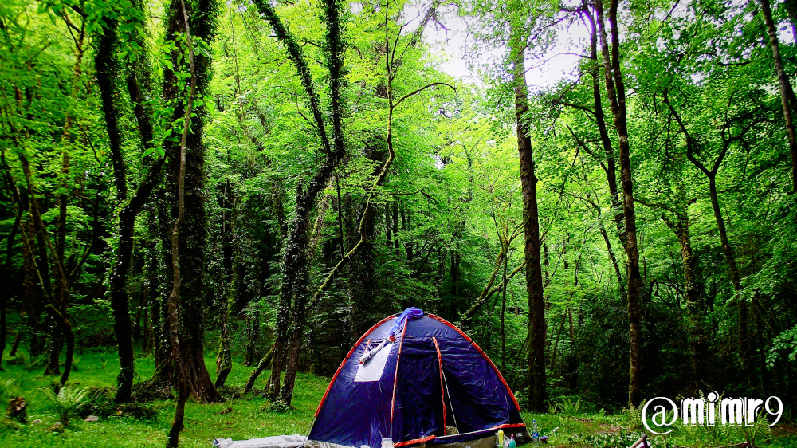 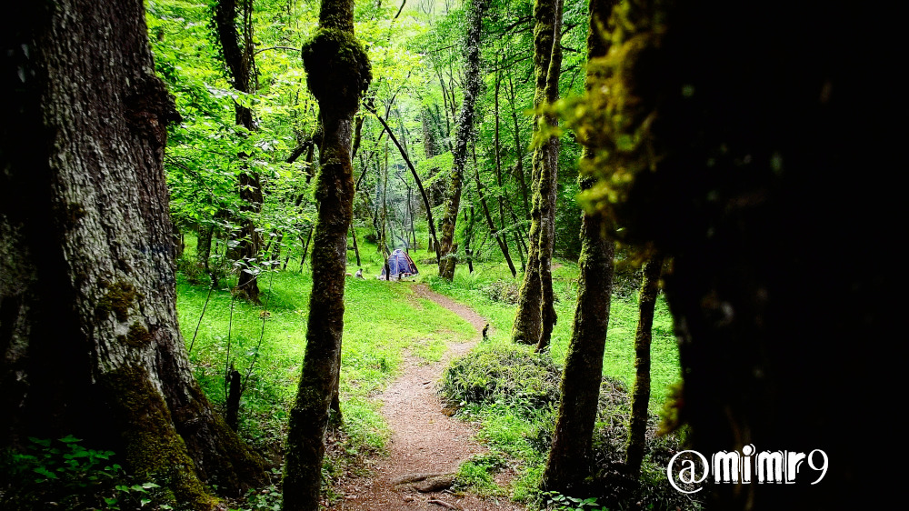 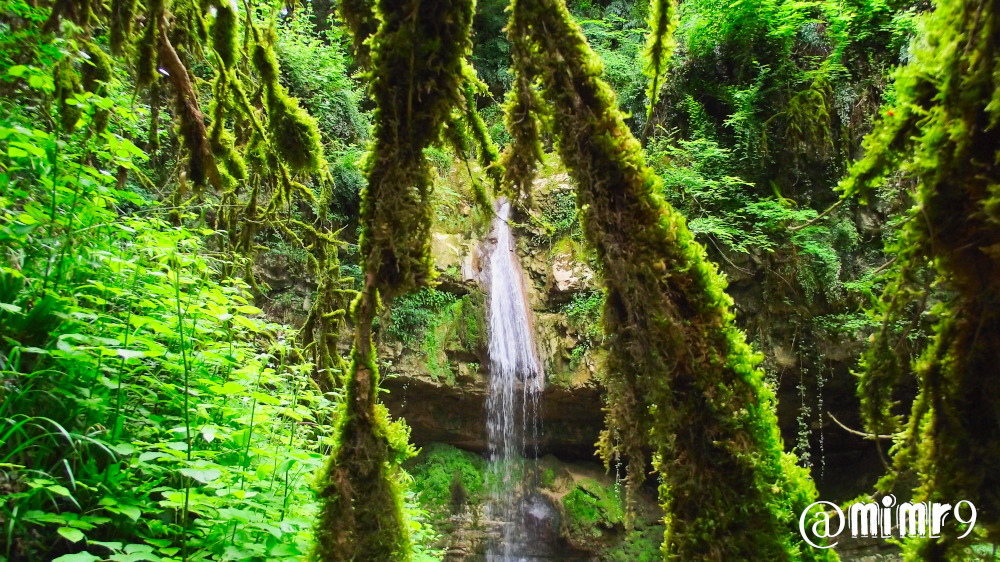 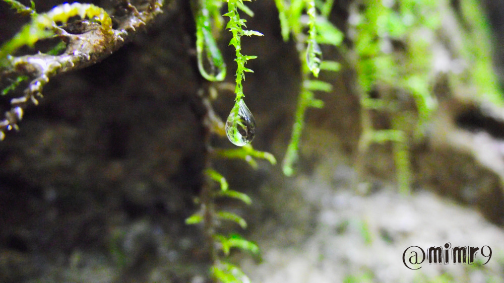 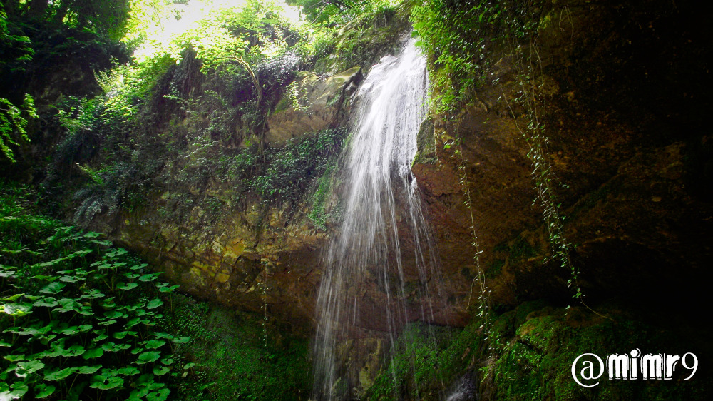 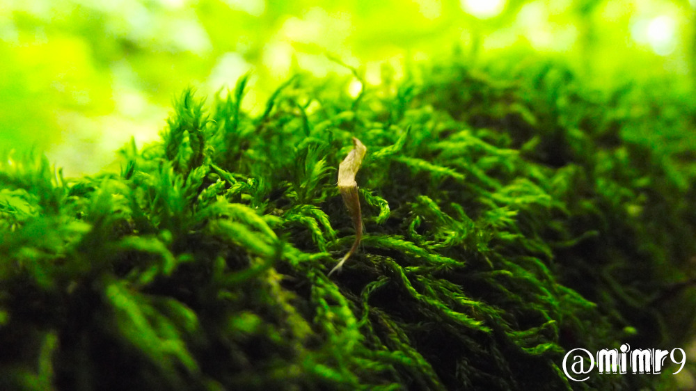 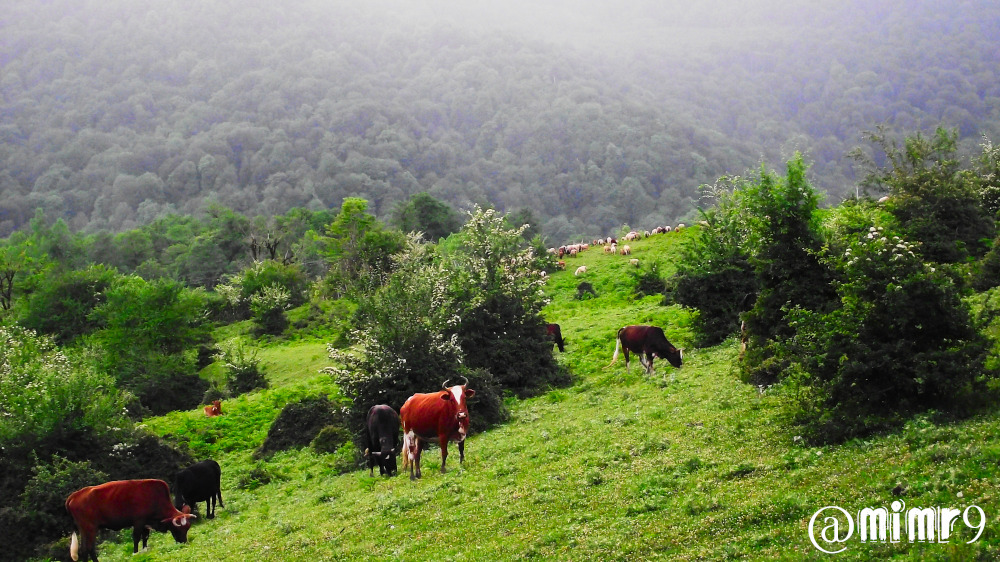 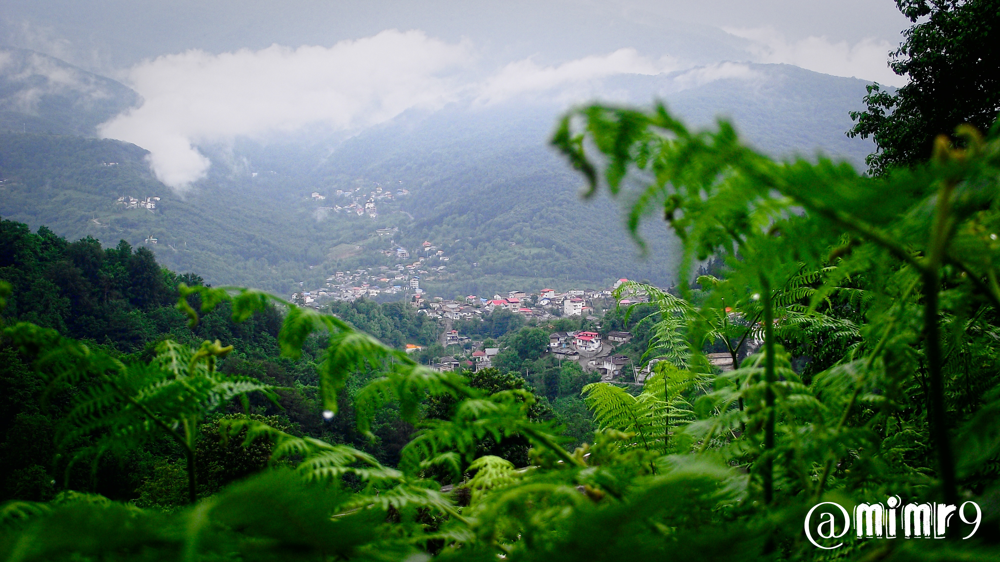